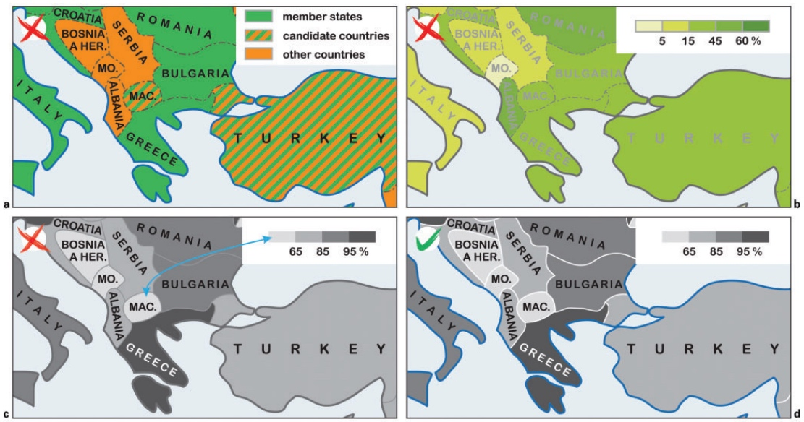
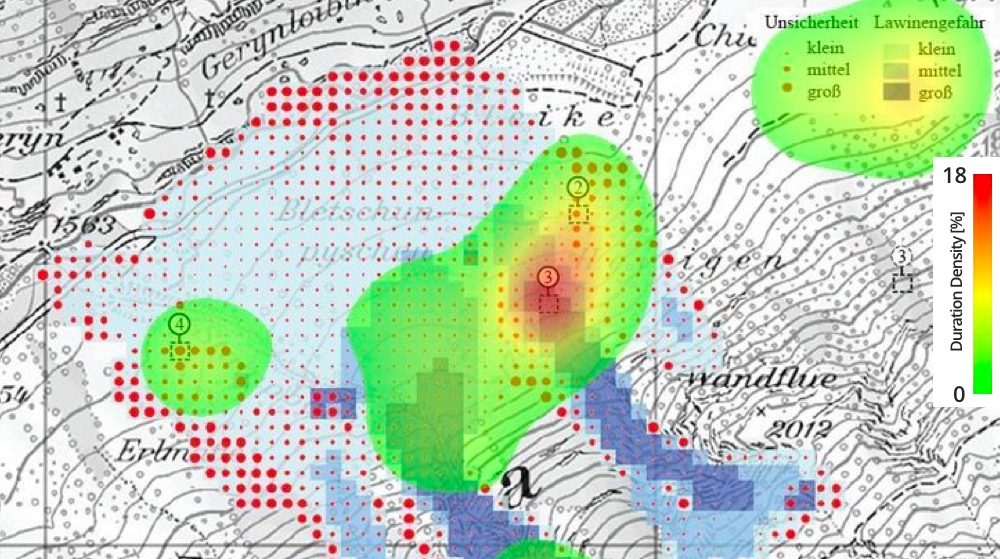

This is a brief story of how I found a passion in designing digital products and making them easy to use with a permanent user centric focus and with an emphasis on user research and usability testing.
In my previous life (well, kind of;-), I was an academic researcher at
Masaryk University in the Czech Republic (and temporarily a guest postdoc researcher at
University of Zurich, Switzerland) where I focused my research on cognitive and usability aspects in cartography (which was, by the way, a field I had studied before).
As a member of the
Center for Experimental Psychology and Cognitive Sciences (CEPCoS), I participated in multidisciplinary research of user-related issues in cartography (cognitive processes in map reading, wayfinding, spatial decision making, human-computer interaction, intercultural differences, stress factors in map perception, and others). We researched the mentioned topics using various methods and techniques, including qualitative and quantitative tests, eye-tracking, 3D and pseudo 3D visualization, virtual reality, and psychological testing approaches.
During the research in academia, I changed my view on creating things (for sure, mostly maps in those times) and started to look at them from the user’s perspective; “fight for users!” started to be my strong motivation. Finally, I decided to leave academia and switch my focus to software industry (to try out the theory in a practice). I felt that I could be more helpful in this area in using my experience in building new products with putting an emphasis on users’ needs. This was my natural process of becoming a digital product designer.
Nowadays, I keep this knowledge in my mind every day that I design a new product. Considering the user’s point of view sometimes brings painful fights with other stakeholders (who want to take it a bit the straightforward way), but it is the only way to reach the goal. Therefore, my design process is definitely interconnected with validation and I always try to get solutions based on research and objective findings.
Selected research outputs
I have participated in lots of projects from 2009 to 2015 and summed up this work in many scientific papers and book chapters. If I should highlight some of them I would probably choose the most recent peer-reviewed ones mentioned below. However, some other research outputs can be found on my
ResearchGate profile (which is kind of the “academic Facebook”). Let me know if you want to know more about something that I did at this time; I would be more than happy to share some more detailed information.
Cross-cultural differences in figure-ground perception of cartographic stimuli (published in the Cartography and Geographic Information Science in 2018)
This paper reports on an empirical study investigating cultural differences in the visuo-spatial perception and cognition of qualitative point symbols shown on reference maps. Two informationally equivalent symbol sets were developed and depicted on identical reference maps that were shown to Czech and Chinese map readers. The symbols varied in the visual contrast with respect to the base map.
Our empirical results suggested the existence of cultural influences on map reading, but not in the predicted direction based on the previous cross-cultural studies. The findings stressed the importance of considering the cultural background of map readers, especially when designing reference maps aimed for global online use.
The whole paper can be found
here.
✖ ✖ ✖ ✖ ✖ ✖
Cartographic Design and Usability of Visual Variables for Linear Features (published in the Cartographic Journal in 2016)
This research assessed map-reading tasks relative to various modes of linear feature visualization via testing response times and error rates in a between-subject design study. Participants completed a set of map-reading tasks generated by approaches to a traffic problem. These entailed quick and correct decoding of graphically represented quantitative and qualitative spatial information (communicated in several different ways). The concept of cognitive style partially explains the variability in people’s perception and thinking, describing individual preferences in object representation and problem-solving strategies.
The experiment results assumed that alternative forms of visualization may have different impacts on performance in map-reading tasks: color hue and size proved more efficient in communicating information than shape and color value. Apart from this, it was shown that individual facets of cognitive style may affect task performance.
The whole paper can be found
here.
✖ ✖ ✖ ✖ ✖ ✖
Color Contrast in Cartographic Works Using the Principles of Johannes Itten(published in the Cartographic Journal in 2014)

Examples of appropriate and inappropriate use of simultaneous color contrast researched in the paper: (a) expansion of European Union (periphery vibration); (b) employment in agriculture (effacement of neutral tones); (c) and (d) percentage practicing dominant religion: (c) Bezold effect; (d) mitigated by white borders
Color is generally considered a key mean of expression for information visualizations. This is because colors and the relations among them influence not only the aesthetic impression it creates, but also its overall utility. In addition to Newton’s spectral color theory, today, theories with origins in artistic technique are gaining ground in cartography.
This paper introduced J. Itten’s color theory (a Swiss designer who first published this theory in 1961 in The Art of Color) with special attention given to his concept of seven color contrasts. The article also discussed the suitability and unsuitability of their application in cartography, and it contributes original examples employing thematic maps.
The whole paper can be found
here.
✖ ✖ ✖ ✖ ✖ ✖
Mixed Research Design in Cartography: A Combination of Qualitative and Quantitative Approaches (published in Kartographische Nachrichten in 2014)

Heat map-example analysis of one of the tasks in the test. The instruction was to determine the area of medium avalanche hazard
This research paper deals with methodological issues related with the evaluation of cartographic materials. A new research design for map evaluation came from an extensive cooperation between cartographers and psychologists. A mixed research design, combining the quantitative and qualitative methods, was proposed and tested during a map reading experiment.
Proposed research design was testing usability of two different cartographic approaches to avalanche hazard visualization. The quantitative analysis enables to detect potential differences in the compared visualization methods in the sense of their effectiveness and efficiency, and the qualitative analysis of the eye-movement data might improve our understanding of the ways different cognitive strategies are applied.
The whole paper can be found
here.
✖ ✖ ✖ ✖ ✖ ✖
Influence of Graphic Design of Cartographic Symbols on Perception Structure (published in Kartographische Nachrichten in 2013)
This paper presents a research that was established by interdisciplinary cooperation of psychologists and cartographers. The research was focused on influence of graphic design of map symbols on perceptual structure. Two different sets of map symbols were presented on identical topographic background. Each of the symbol sets was created by different authors and particular symbols vary in size, structure or color shades. An influence of cognitive style (i. e. psychological aspect) of respondents was observed too.
The whole paper can be found
here.
← BACK TO PROJECTS